Pixel art, the spin ball, Nox, and two-minute levels
Piko Turbo now looks like one 16-bit game. Every sprite and tile is hand-authored pixel data in the code. Piko curls into a ball, Nox joins as a second hero with a dash, and the five levels each last about two minutes. Phaser and its CDN script are gone, so the game makes no network call at all.
How a frame is drawn
js/sprites/*.js: palettes and rows of characters, one per pixeljs/art.js: sprite canvases, sky, parallax, loops, terrain chunksjs/render.js: 480×270, positions rounded to whole art pixelsjs/play.js: one upscale at device pixels, imageSmoothingEnabled = falseMenu and heroes
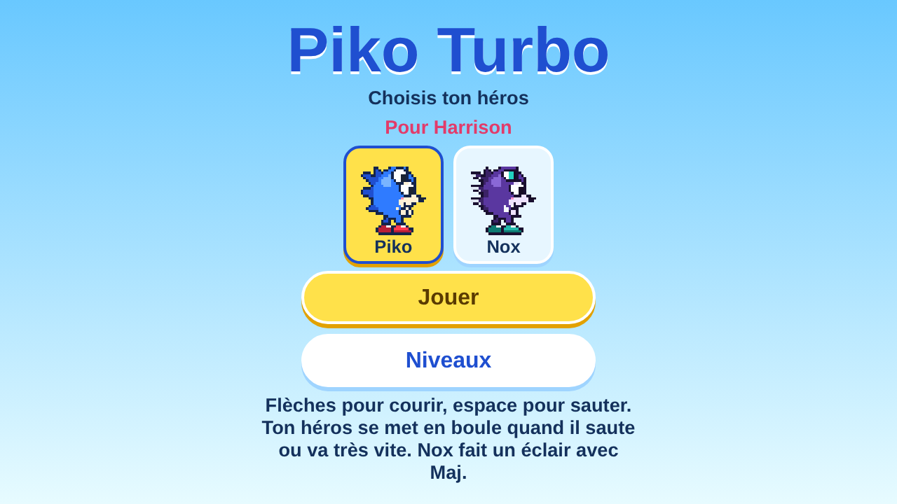
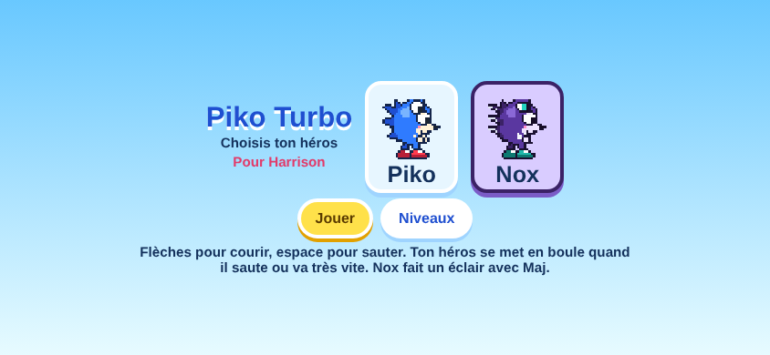
Running, the ball, the dash
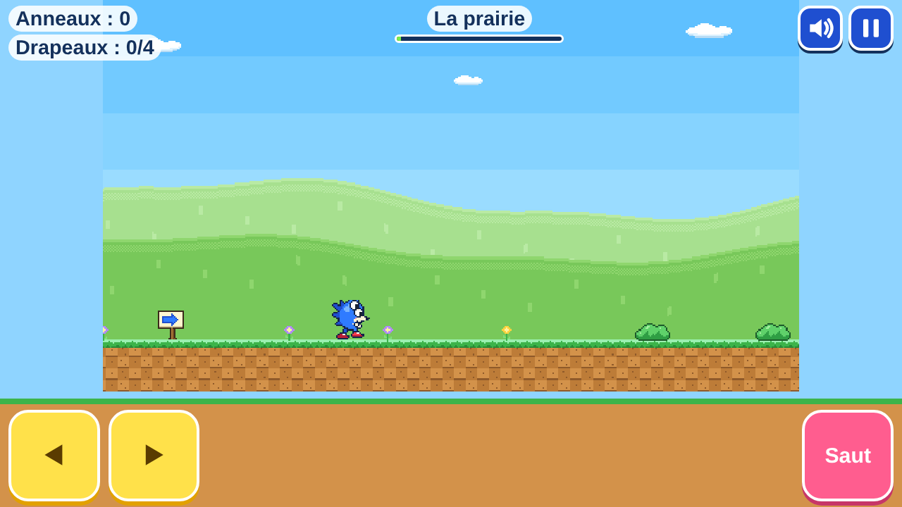
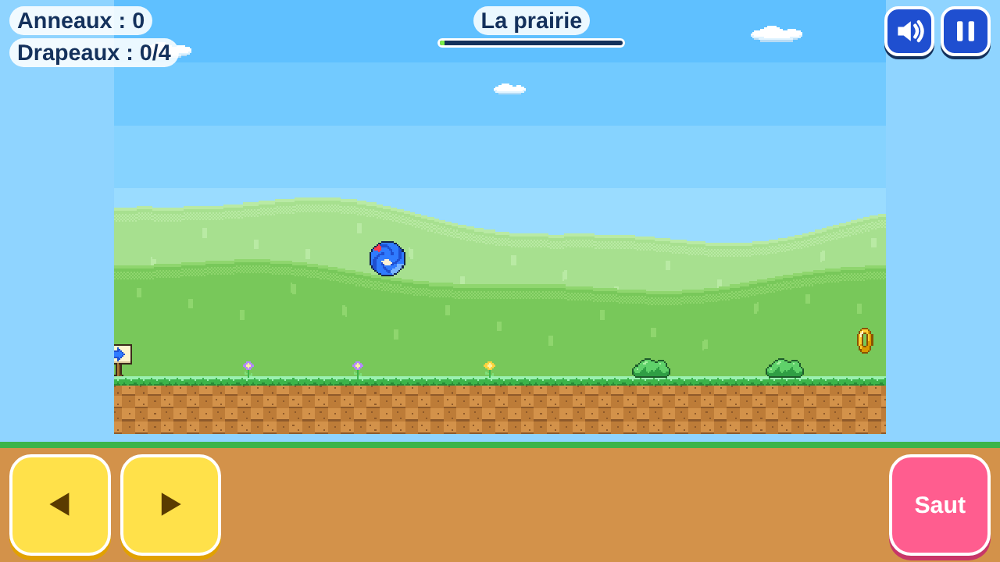
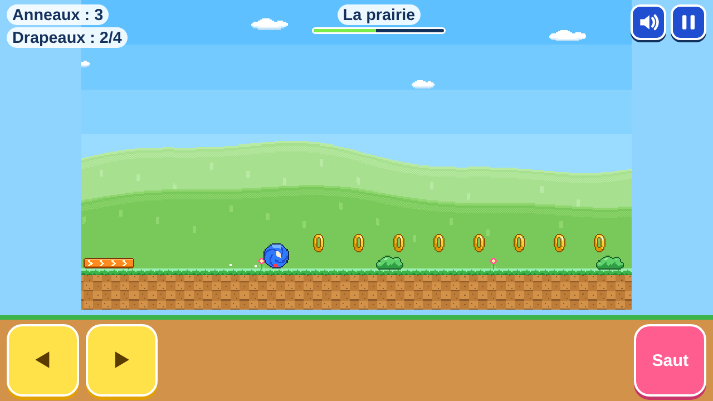
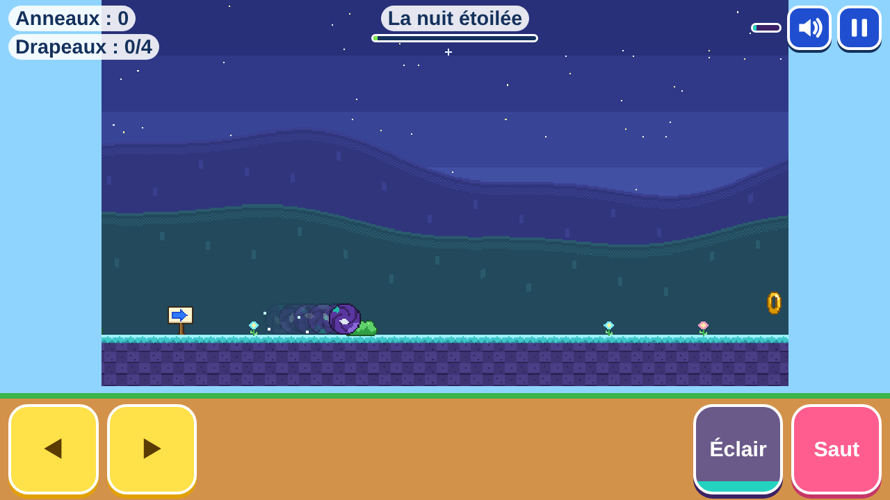
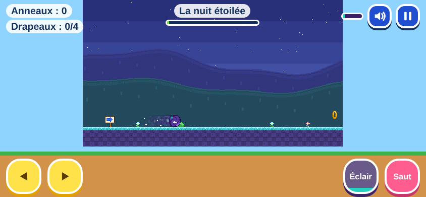
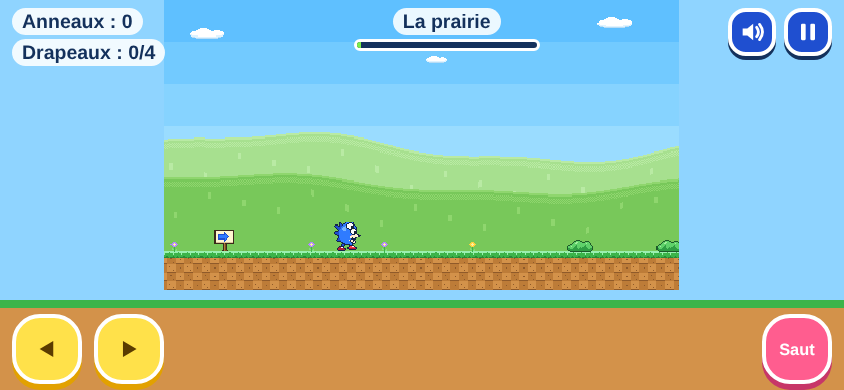
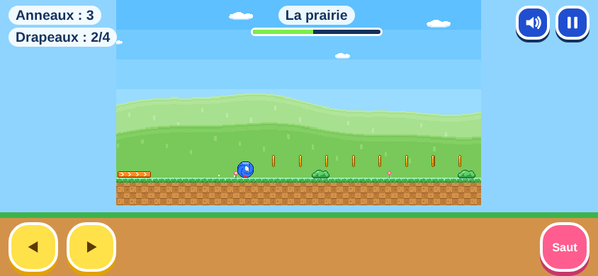
Every frame of both heroes (×6)
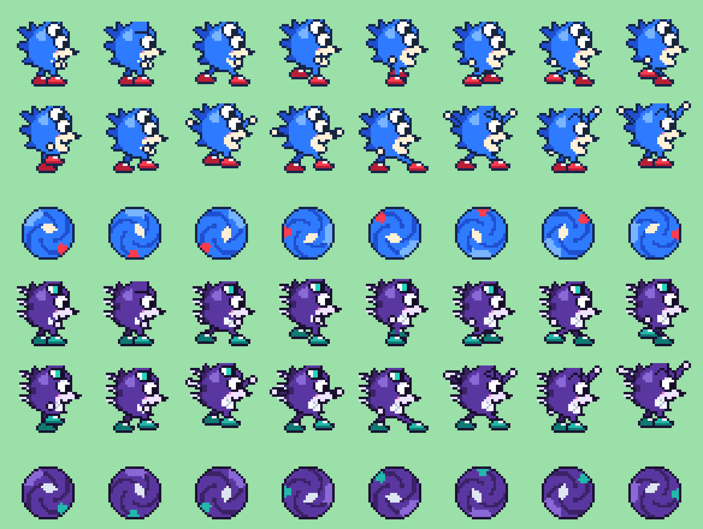
tools/render-sprites.mjs from the game's own data.One frame per level
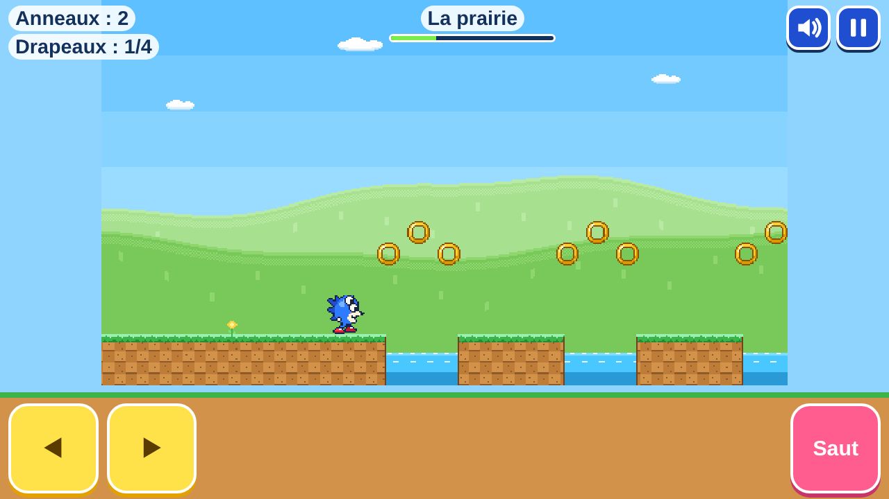
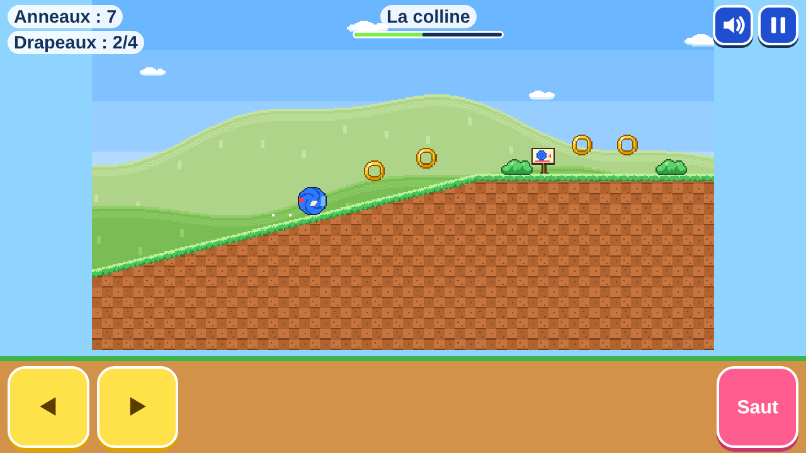
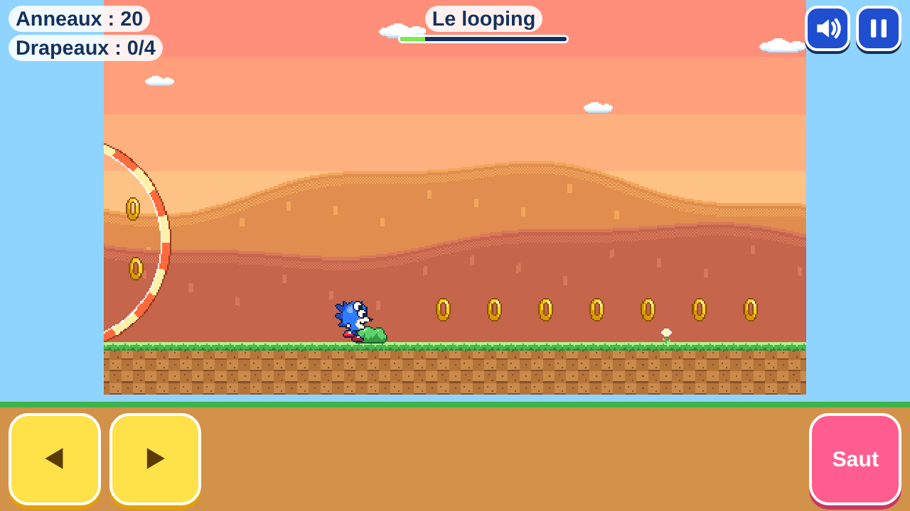
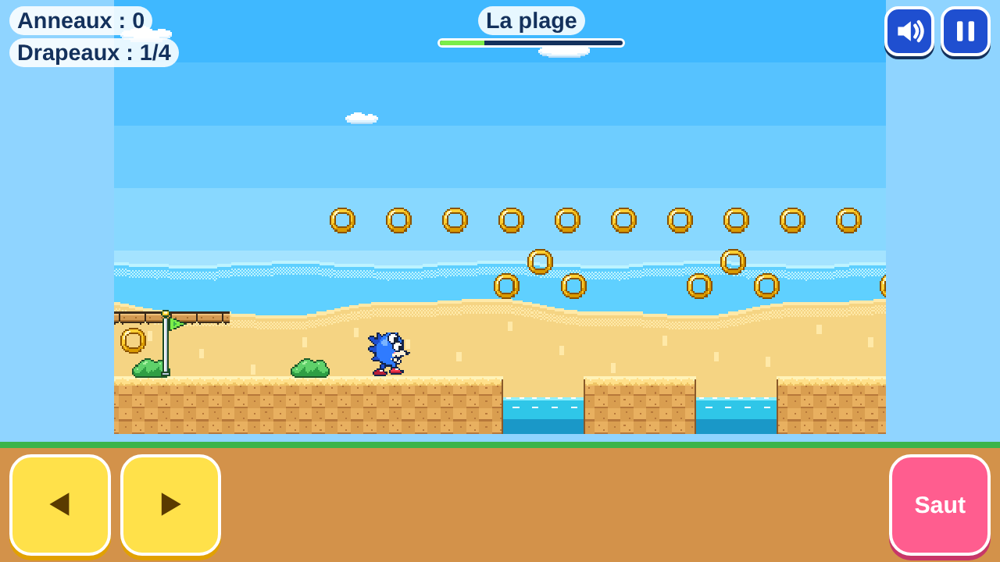
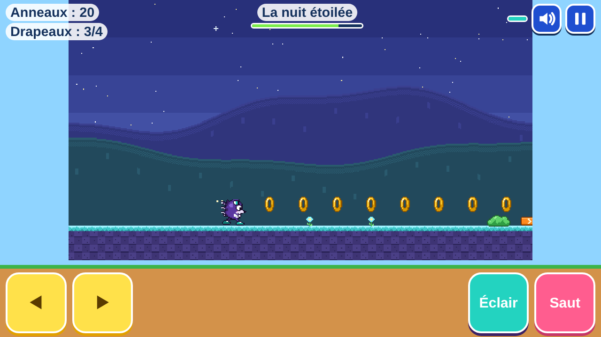
Bot run per level
A bot holds right, jumps when the ground ahead ends or a blob is close, and never presses down or dash. The test fails if it falls, takes under 70 s or over 170 s, or goes more than 35 s between two flags.
| Level | Sections | Length (px) | Piko (s) | Nox (s) | Flags | Longest stretch between flags (s) | Rings (bot got) | Widest gap (jump reach ×) | Falls |
|---|---|---|---|---|---|---|---|---|---|
| La prairie | 13 | 27 210 | 97.3 | 87.6 | 4 | 24.9 | 265 (244) | 110 (×1.55) | 0 |
| La colline | 11 | 26 770 | 87.8 | 78.7 | 4 | 21.8 | 260 (239) | 100 (×1.70) | 0 |
| Le looping | 11 | 24 060 | 82.7 | 75.3 | 4 | 18.3 | 259 (213) | 100 (×1.70) | 0 |
| La plage | 12 | 25 080 | 89.6 | 80.6 | 4 | 20.9 | 268 (231) | 100 (×1.70) | 0 |
| La nuit étoilée | 10 | 25 620 | 87.7 | 80.2 | 4 | 24.7 | 276 (238) | 100 (×1.70) | 0 |
The bot never stops, looks around or backtracks for rings, so a calm first try by a child should land around two minutes. That estimate has not been checked with a child.
Rules that changed
Main files
js/sprites/pixels, hero poses, Piko, Nox, world
js/art.js, js/render.js, js/themes.jspre-render and draw
js/play.jscanvas loop, replaces Phaser
js/physics.jsball, roll, dash, springs, platforms
js/level-kit.js, js/levels.jsfive levels as named sections
index.html, js/main.js, css/game.csshero choice, HUD, pause, mute, touch
tools/PNG codec, sprite sheets, report screenshots
Tests
npm test # 73 passed: physics 37, levels 21, sprites 9, characters 6 npm run smoke # 12 passed: title, character choice, run, jump ball, down-arrow ball, dash, crisp pixels, pause and focus, viewport fit